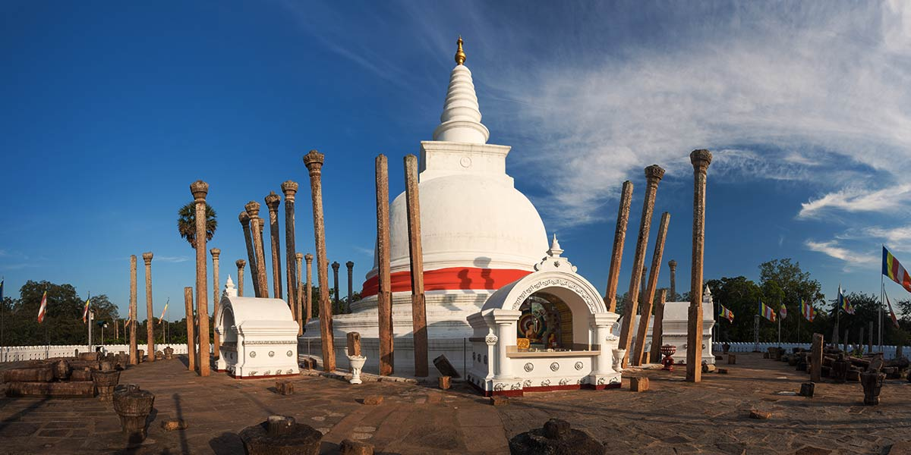

Sri Lanka's oldest stupa, enshrining the collarbone relic of the Buddha and standing as the very first dagoba built on the island over 2,300 years ago.
Built in the 3rd century BC by King Devanampiya Tissa following the introduction of Buddhism to Sri Lanka, Thuparamaya holds the extraordinary distinction of being the oldest stupa on the island. It was constructed to enshrine the right collarbone relic of the Gautama Buddha, brought to Sri Lanka by the Indian Emperor Ashoka's envoy.
The stupa follows a unique 'heap of paddy' (dhanyagara) shape and is surrounded by elegant stone pillars known as 'vatadage' pillars, which once supported a circular relic house. Having been restored multiple times over the centuries, Thuparamaya remains a deeply venerated and active place of worship, drawing pilgrims from across the Buddhist world.
Back to Anuradhapura Hub